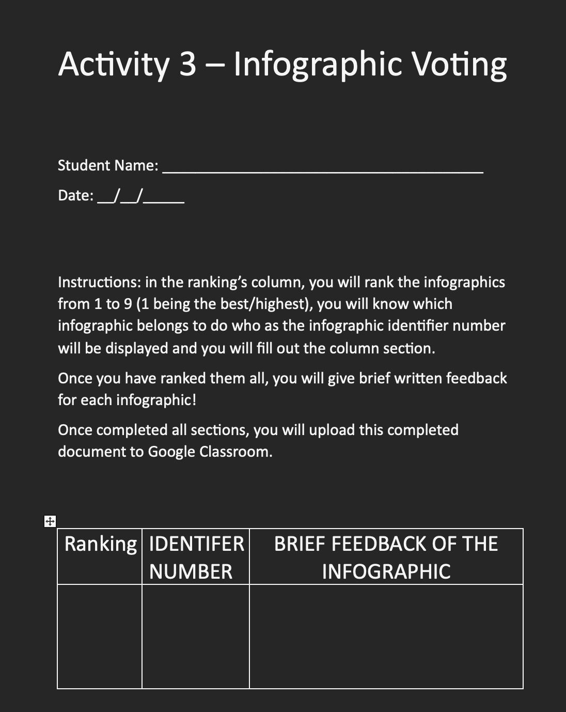

Resources
Written Infographic Guide
Refer students to the above link for a written guide on creating their inforgraphic
Students will use the below scaffold to "vote" and rank their favourite inforgraphics
AITSL Standards:
Standard 2.6 Information and Communication Technology (ICT) - This standard is used by students engaging in research in different types of media and also the presentation of the students final work is based in a heavily ICT grounded concept (infographic).
Standard 5.3 Make consistent and comparable judgements - This standard is used as students will provide diagnostic asssessment of themselves and their peers via the use of the feedback form and infographic submission, which allow for the teacher to adjust later lessons if needed based on the data gathered.